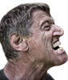
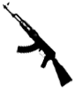
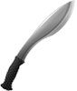

TIPS
Att spela i ett lag kan göra det enklare
Titta dig omkring, det kan finnas ledtrådar i mijön
Tänk på! att du har två gissningar
Använd tiden effektivt och fånga många ledtrådar
Läs NOGA!
MISSTÄNKTA

VAPEN


JAG VET!
Tips
Ledtrådar
Misstänka